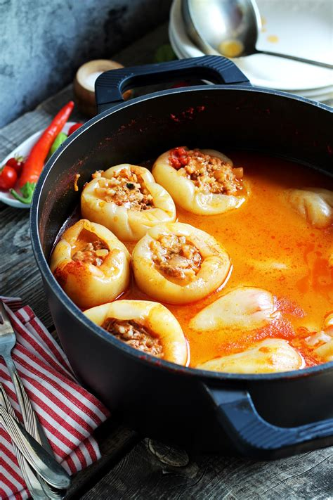

Stuffed Peppers

Description
Stuffed peppers is a dish common in many cuisines. It consists of hollowed or halved peppers filled with any of a variety of fillings, often including meat, vegetables, cheese, rice, or sauce. The dish is usually assembled by filling the cavities of the peppers and then cooking.
Ingredients
- 8-10 medium sized peppers
- 1 kg of minced meat (1/2 pork, 1/2 lamb)
- 1 cup of rice
- 2 tbsp tomato paste
- salt & pepper
- 1 tbsp smoked ground paprika
- 200 g of bacon or ham (or other cured meat)
Steps
- Dice the onion and saute it in a pot. Add the minced meat and let it brown a little. Set the pot aside and let it cool.
- Carve out the stem from the peppers and scoop out all the seeds and stringy bits. Wash them out and set them to dry upside down on a paper towel.
- Once the meat has cooled down, mix it in a large bowl with the rice. Add in the ground paprika, salt & pepper to taste.
- Start stuffing the peppers with the stuffing you just made until they are almost full.
- Find the biggest pot you have in the house and start lining the bottom of the pot with your peppers, which should be standing upright. Add just enough water to cover the peppers completely.
- Add in the tomato paste and bacon. Cook the dish for about 2 hours, stirring occasionaly.